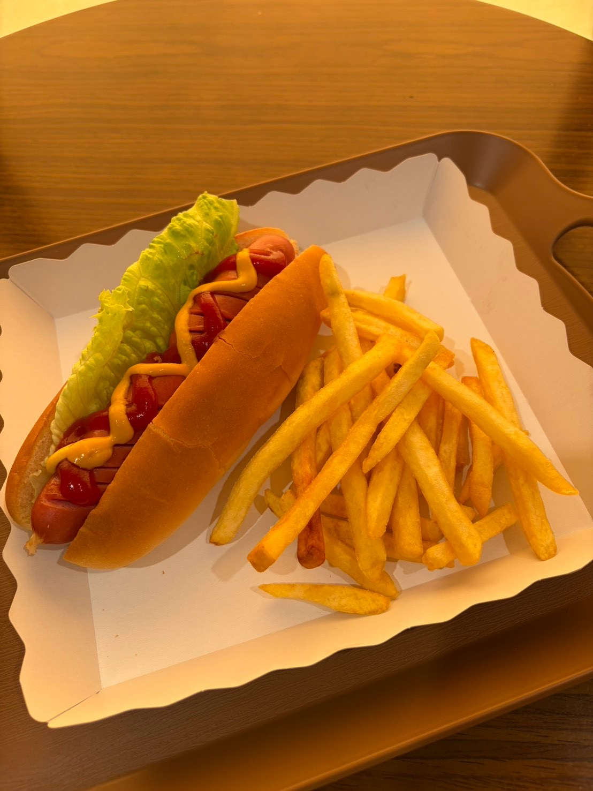
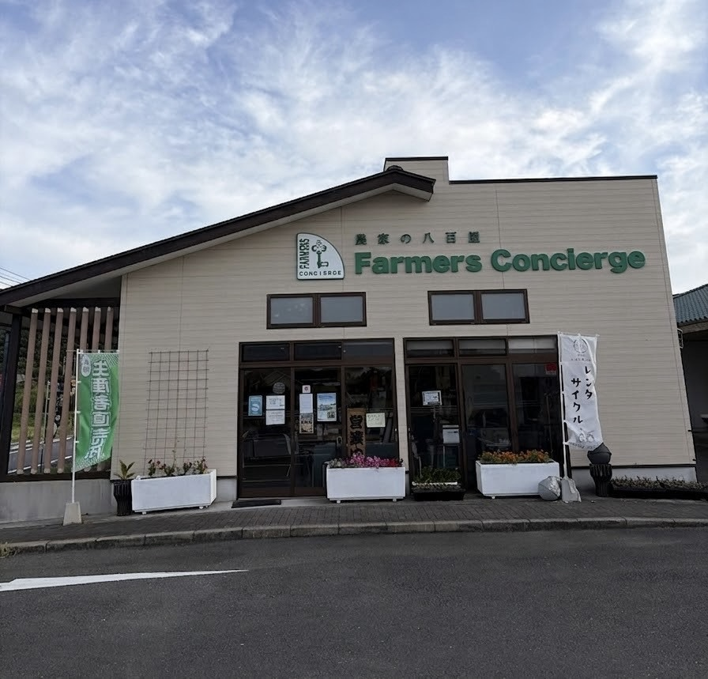
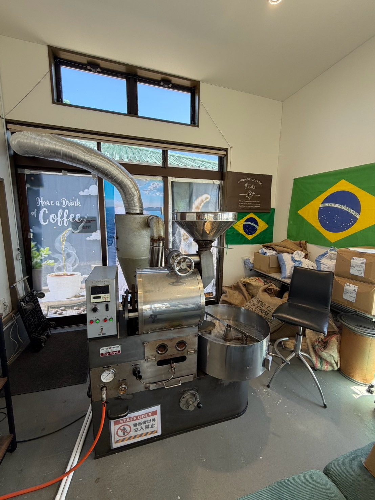
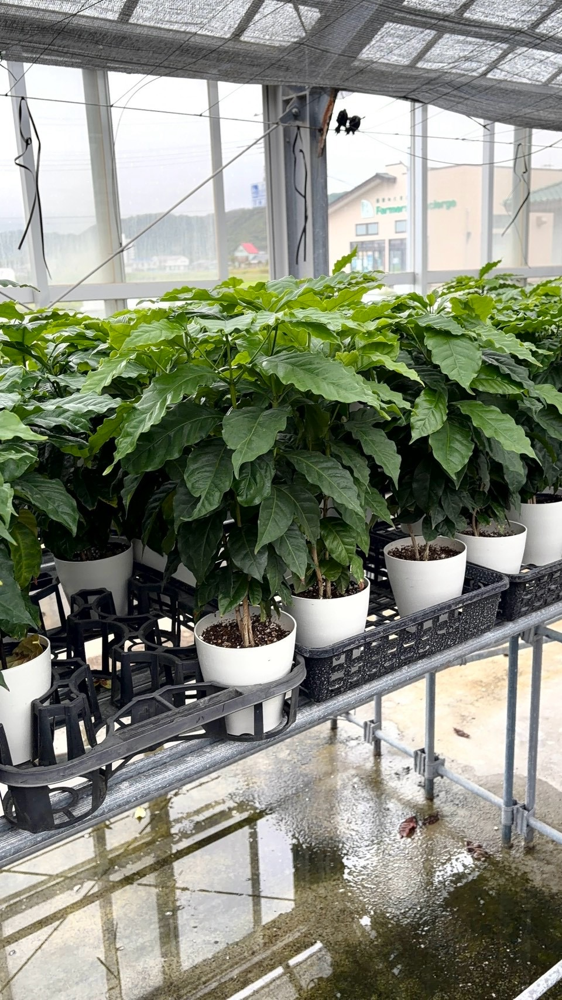
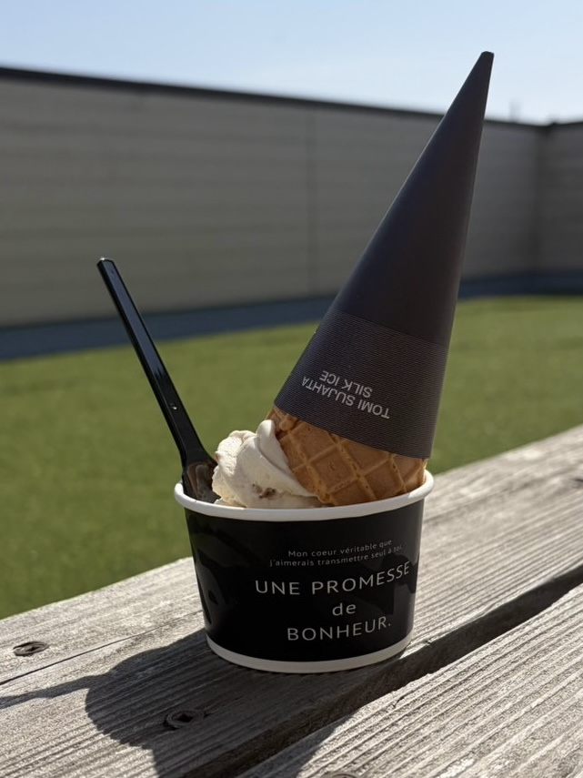
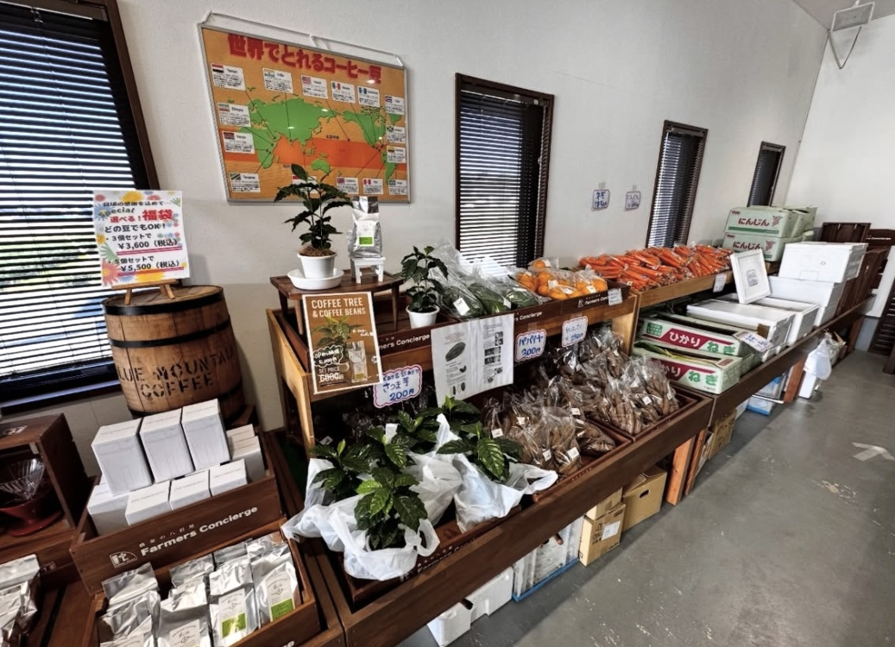
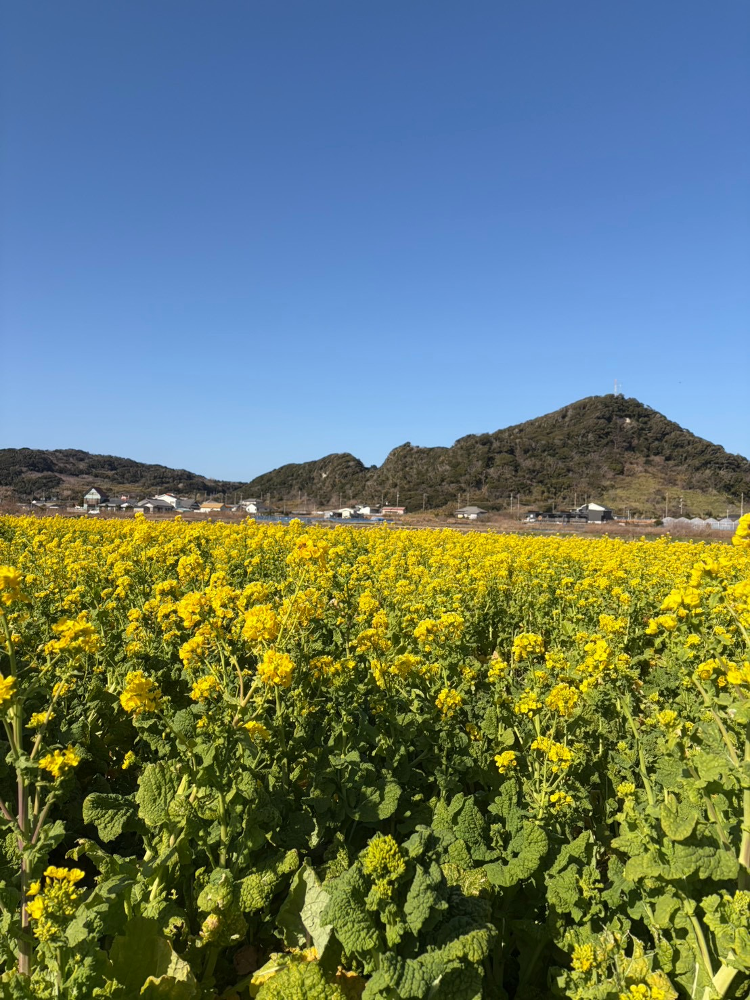
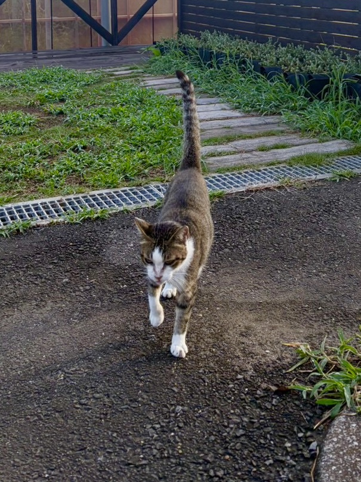

FOOD
ホットドックwithフライドポテト
この他たくさんのお惣菜パンを店頭にご用意しております
地元のおいしいものに出会ったり、コーヒーの香りにひと息ついたり。ドライブの途中に、気軽に立ち寄ってみませんか。



店内にはコーヒー焙煎機があります。タイミングが合えば、豆が焙煎される様子を見られることも。
店内でコーヒーを楽しめるほか、焙煎したコーヒー豆も販売しています。豆の種類や価格は仕入れ状況などによって変わるため、最新情報は店頭でご確認ください。
おすすめメニューや地元の味をご紹介。販売状況や品ぞろえは日によって異なる場合があります。

この他たくさんのお惣菜パンを店頭にご用意しております

ドライブの休憩にぴったり！フレーバーや販売状況は時期によって異なります。

地域のおいしいものや特産品との出会いも楽しみのひとつ。入荷状況は時期によって異なります。
観光やドライブの途中に。地元の方のお買い物や、ちょっとした休憩にもお立ち寄りください。

地元の野菜や特産品など、季節ごとの出会いをお楽しみください。

南房総の旅の途中に、気軽な休憩スポットとしてどうぞ。副駅長のもんちゃんにも会えるかも🐈
営業時間をご確認のうえ、お越しください。
※最新情報は公式Instagramまたは店頭でご確認ください。